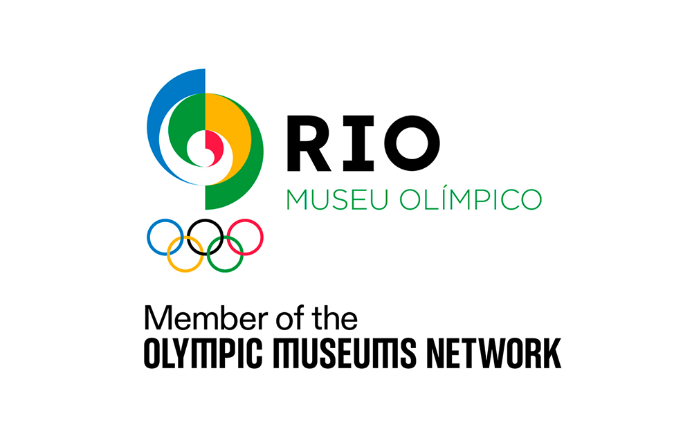
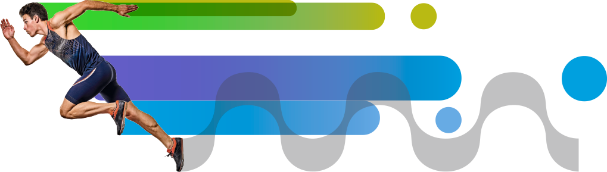

Notícia
Museu recebe 100 mil visitantes em sete meses de operação
Marca foi atingida com a chegada de uma família carioca em visita guiada na última terça-feira.
13 núcleos temáticos, experiências interativas e o acervo completo dos Jogos Olímpicos e Paralímpicos do Rio de Janeiro.
Membro oficial da rede Olympic Museum Memory, o Rio Museu Olímpico é uma plataforma educativa, social e ambiental que preserva e celebra o legado dos Jogos Olímpicos e Paralímpicos Rio 2016.

Membro oficial da rede internacional Olympic Museum Memory.

Ser uma plataforma educativa, social e ambiental que preserva e celebra o legado dos Jogos Rio 2016.
Tornar-se referência cultural na América do Sul, integrando esporte, educação e transformação social.
Uma jornada completa pela história, bastidores e legado dos Jogos.
Visão geral dos Jogos Olímpicos e Paralímpicos Rio 2016.
A trajetória do esporte brasileiro até 2016.
Os momentos icônicos das aberturas e encerramentos.
A jornada da tocha pelo Brasil.
A operação por trás do maior evento esportivo do país.
Histórias e medalhas dos representantes do país.
Esporte adaptado e o protagonismo paralímpico.
Os 50 mil que fizeram os Jogos acontecerem.
Como o mundo viu o Rio em 2016.
Inovações ambientais dos Jogos Rio 2016.
Manifestações artísticas em torno dos Jogos.
O Rio antes e depois de 2016.
O que ficou: equipamentos, parques e impacto social.
130 m² para mostras rotativas, com curadoria nacional e internacional.
Tocha, medalhas, uniformes, fotos, vídeos e depoimentos. Tudo catalogado e acessível.
Explorar o acervoTour com a curadoria pelos espaços que mostram a operação dos Jogos.
Atividade prática para crianças de 6 a 12 anos.
Mesa-redonda com atletas e gestores esportivos.
Marca foi atingida com a chegada de uma família carioca em visita guiada na última terça-feira.
Novidades, exposições e atividades educativas, uma vez por mês.